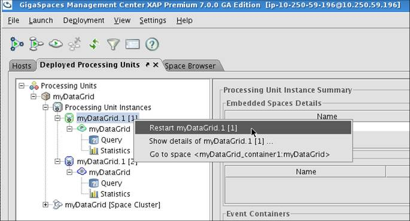
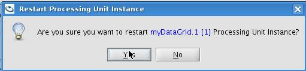

Section Summary: Explains how to deploy your processing unit onto the GigaSpaces Service Grid to get automated SLA management and self-healing capabilities
Overview
Deploying your processing unit to the service grid is the preferred way to run your it in your production environment. The service grid provides the following main benefits to the processing unit deployed onto it:
- Automatic distribution and provisioning of the processing unit instances: When deploying to the service grid the GigaSpaces Manager identifies the relevant GigaSpaces Containers and takes care of distributing the processing unit binaries to them. You do not need to manually install the processing unit anywhere on the cluster.
- SLA enforcement: The GigaSpaces Manager is also responsible for enforcing your processing unit's Service Level Agreement, or SLA. At deployment time, it will create a specified number of processing unit instances and provision them to the running containers while enforcing all the deployment requirements, such as memory and CPU utilization, or specific deployment zones. At runtime, it will monitor the processing unit instances, and if any of them fail to fulfill the SLA or become unavailable it will re-instantiate the processing unit automatically on another container.
- Automatic machine provisioning and dynamic SLA enforcement: Elastic Processing Units are a new type of PU. Elastic PUs provision machines and start GigaSpaces Containers on their own based on their Memory and CPU requirements. When the available machines do not meet the requirements, the manager provisions new machines and balances the Processing Unit deployment across machines. This occurs when a machine fails, or when the requirements changes while the application is running.
The Deployment Process
Once built according to the processing unit directory structure, the processing unit can be deployed via the various deployment tools available in GigaSpaces XAP (UI, CLI, Ant, Maven or the Admin API).
After you package the processing unit and deploy it via one of the deployment tools, the deployment tool uploads it to all the running GSMs, where it is extracted and provisioned to the GSCs.
| To Jar or Not to Jar The recommended way to deploy the processing unit is by packaging it into a .jar or a .zip archive and specifying the location of the packaged file to the deployment tool in use. However, GigaSpaces XAP also supports the deployment of exploded processing units. The deployment tool will package the processing unit directories into a jar file automatically). Another option to deploy a processing unit is by placing the exploded processing unit under the deploy directory of each of the GSMs and issuing a deploy command with the processing unit name (the name of the directory under the deploy directory). |
Distribution of Processing Unit Binaries to the Running GSCs
By default, when a processing unit instance is provisioned to run on a certain GSC, the GSC downloads the processing unit archive from the GSM into the <GigaSpaces Root>/work/deployed-processing-units directory (The location of this directory can be overridden via the com.gs.work system property).
Downloading the processing unit archive to the GSC is the recommended option, but it can be disabled. In order to disable it, the pu.download deployment property should be set to false. This will not download the entire archive to the GSC, but will force the GSC to load the processing unit classes one at a time from the GSM via a URLClassLoader.
Processing Unit Deployment using various Deployment Tools
GigaSpaces provides several options to deploy a processing unit onto the Service Grid. Below you can find a simple deployment example with the various deployment tools for deploying a processing unit archive called myPU.jar located in the usr/gigaspaces directory:
Admin API
Deploying via code is done using the GigaSpaces Admin API. The following example shows how to deploy the myPU.jar processing unit using one of the available GSMs. For more details please consult the documentation and javadoc of the Admin API.
Admin admin = new AdminFactory().addGroup("myGroup").create(); File puArchive = new File("/opt/gigaspaces/myPU.jar"); ProcessingUnit pu = admin.getGridServiceManagers().deploy(new ProcessingUnitDeployment(puArchive));
Ant
Deploying with Ant is based on the org.openspaces.pu.container.servicegrid.deploy.Deploy class (in fact, all of the deployment tools use this class although it is not exposed directly to the end user).
In the below example we create an Ant macro using this class and use it to deploy our processing unit. The deploy class is executable via its main() method, and can accept various parameters to control the deployment process. These parameters are identical to these of the deploy CLI command, for a complete list of the available parameters please consult the deploy CLI reference documentation..
<deploy file="/opt/gigaspaces/myPU.jar" /> <macrodef name="deploy"> <attribute name="file"/> <sequential> <java classname="org.openspaces.pu.container.servicegrid.deploy.Deploy" fork="false"> <classpath refid="all-libs"/> <arg value="-groups" /> <arg value="mygroup" /> <arg value="@{file}"/> </java> </sequential> </macrodef>
GigaSpaces CLI
Deploying via the CLI is based on the deploy command. This command accepts various parameters to control the deployment process. These parameters are documented in full in the deploy CLI reference documentation..
> <gigaspaces root>/bin/gs.sh(bat) deploy myPU.jar
GigaSpaces UI
- Open the GigaSpaces UI by launching {{<gigaspaces root>/bin/gs-ui.sh(bat)
- Click the "Deploy Application" button at the top left of the window
- In the deployment wizard, click ... to select your processing unit archive, and then click Deploy
Elastic Processing Unit Deployment using the Admin API
When deploying a partitioned Processing Unit or a paritioned Space it is recommended to use the new Elastic Processing Unit. This can be done via the Admin API. The following example shows how to deploy a processing unit as an Elastic PU.
Step 1 - Start a GigaSpaces agent on each machine:
You should have one GigaSpaces agent running the ESM. No GSCs should be started.
Windows
rem Agent deployment that potentially can start management processes
set LOOKUPGROUPS=myGroup
set JSHOMEDIR=d:\gigaspaces
start cmd /c "%JSHOMEDIR%\bin\gs-agent.bat gsa.global.esm 1 gsa.gsc 0 gsa.global.gsm 2 gsa.global.lus 2"
Linux
# Agent deployment that potentially can start management processes
export LOOKUPGROUPS=myGroup
export JSHOMEDIR=~/gigaspaces
nohup ${JSHOMEDIR}/bin/gs-agent.sh gsa.global.esm 1 gsa.gsc 0 gsa.global.gsm 2 gsa.global.lus 2 > /dev/null 2>&1 &
Step 2 - Run the deployment code:
// Wait for the discovery of the managers and at least one agent Admin admin = new AdminFactory().addGroup("myGroup").create(); admin.getGridServiceAgents().waitForAtLeastOne(); admin.getElasticServiceManagers().waitForAtLeastOne(); GridServiceManager gsm = admin.getGridServiceManagers().waitForAtLeastOne(); // Deploy the Elastic Processing Unit. Set the maximum memory and CPU capacity and initial capacity File puArchive = new File("/opt/gigaspaces/myPU.jar"); ProcessingUnit pu = gsm.deploy( new ElasticStatefulProcessingUnitDeployment(puArchive) .memoryCapacityPerContainer(16,MemoryUnit.GIGABYTES) .maxMemoryCapacity(512,MemoryUnit.GIGABYTES) .maxNumberOfCpuCores(32) //.singleMachineDeployment() // uncomment when working with a single machine agent // set the initial memory and CPU capacity .scale(new ManualCapacityScaleConfigurer() .memoryCapacity(128,MemoryUnit.GIGABYTES) .numberOfCpuCores(8) .create()) ); // Wait until the deployment is complete. pu.waitForSpace().waitFor(pu.getTotalNumberOfInstances());
Step 3 - Scale the PU by increasing the memory and CPU capacity:
// Scale in runtime to the desired memory and CPU capacity pu.scale( new ManualCapacityScaleConfigurer() .memoryCapacity(256,MemoryUnit.GIGABYTES) .numberOfCpuCores(16) .create() );
Step 4 - To undeploy the Processing Unit run the following:
ProcessingUnit pu = admin.getProcessingUnits().waitFor("myPU",10,TimeUnit.SECONDS); if (pu != null) { pu.undeploy(); }
Since we are undeploying an Elastic Processing Unit, this will also terminate all the GSCs hosting the PU.
Running the deployment code from the command line is very convinient. Rename the java file extension to groovy, and run it using the following command:
Hot Deploy
To enable business continuity in a better manner, having system upgrade without any downtime, here is a simple procedure you should follow when you would like to perform a hot deploy, upgrading a PU that includes both a business logic and a collocated embedded space:
1. Upload the PU new/modified classes (i.e. polling container SpaceDataEvent implementation or relevant listener class and any other dependency classes) to the PU deploy folder on all the GSM machines.
2. Restart the PU instance running the backup space. This will force the backup PU instance to reload a new version of the business logic classes from the GSM.
3. Wait for the backup PU to fully recover its data from the primary.
4. Restart the Primary PU instance. This will turn the existing backup instance to become a primary instance. The previous primary will turn into a backup, load the new business logic classes and recover its data from the existing primary.
5. Optional - You can restart the existing primary to force it to switch into a backup instance again. The new primary will also use the new version of the business logic classes.
You can script the above procedure via the Administration and Monitoring API, allowing you to perform system upgrade without downtime.
Restart a running PU via the GS-UI
To restart a running PU (all instances) via the GS-UI you should:
1. Start the GS-UI - move into the Deployed Processing Unit tab
2. Right click the mouse on the PU instance you want to restart
3. Select the restart menu option

4. Confirm the operation

5. Within few seconds the restart operation will be completed. If the amount of data to recover is large (few millions of objects), this might take few minutes.
6. Repeat steps 2-4 for all backup instances.
7. Repeat steps 2-4 for all primary instances. This will switch the relevant backup to be a primary mode where the existing primary will switch into a backup mode.
Restart a running PU via the Admin API
The ProcessingUnitInstance includes few restart methods you may use to restart a PU instance:
restart()
restartAndWait()
restartAndWait(long timeout, TimeUnit timeUnit)
Here is an example code that is using the ProcessingUnitInstance.restart to restart the entire PU instances in an automatic manner:
import java.util.concurrent.TimeUnit; import java.util.logging.Logger; import org.openspaces.admin.Admin; import org.openspaces.admin.AdminFactory; import org.openspaces.admin.pu.ProcessingUnit; import org.openspaces.admin.pu.ProcessingUnitInstance; import com.gigaspaces.cluster.activeelection.SpaceMode; public class PUReatartMain { static Logger logger = Logger.getLogger("PUReatart"); public static void main(String[] args) { String puToReatart = "myPU"; Admin admin = new AdminFactory().createAdmin(); ProcessingUnit processingUnit = admin.getProcessingUnits().waitFor( puToReatart, 10, TimeUnit.SECONDS); if (processingUnit == null) { logger.info("can't get PU instances for "+puToReatart ); admin.close(); System.exit(0); } // Wait for all the members to be discovered processingUnit.waitFor(processingUnit.getTotalNumberOfInstances()); ProcessingUnitInstance[] puInstances = processingUnit.getInstances(); // restart all backups for (int i = 0; i < puInstances.length; i++) { if (puInstances[i].getSpaceInstance().getMode() == SpaceMode.BACKUP) { restartPUInstance(puInstances[i]); } } // restart all primaries for (int i = 0; i < puInstances.length; i++) { if (puInstances[i].getSpaceInstance().getMode() == SpaceMode.PRIMARY) { restartPUInstance(puInstances[i]); } } admin.close(); System.exit(0); } private static void restartPUInstance( ProcessingUnitInstance pi) { final String instStr = pi.getSpaceInstance().getMode() != SpaceMode.PRIMARY?"backup" : "primary"; logger.info("restarting instance " + pi.getInstanceId() + " on " + pi.getMachine().getHostName() + "[" + pi.getMachine().getHostAddress() + "] GSC PID:" + pi.getVirtualMachine().getDetails().getPid() + " mode:" + instStr + "..."); pi = pi.restartAndWait(); logger.info("done"); } }